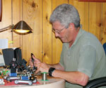

Dr. Dobb's Journal December 2008
Employer: Surveyor Corporation
Job: Robotics Designer
DDJ: What's your job there at Surveyor Corporation?
HG: Robotics Designer, software and hardware.
DDJ: What do you like about your job?
HG: I am working on really interesting projects and interacting with some great developers. Also, I get to apply a lot of my prior experience with image compression and networked video at Xing Technology. Robotic vision is a complex and challenging subject area, and I am very happy to be able to focus my efforts here.
DDJ: What do you find challenging about your job?
HG: Managing the distractions that often keep me from doing advanced development work. I spend a lot of time supporting other developers, but often get great feedback, which leads to nice product extensions, so things generally balance out.
DDJ: What have you found that makes your job easier?
HG: Disconnecting the phone and trying not to spend too much time on e-mail.
DDJ: What do you do when you're not a work?
HG: Spend time with the kids, surf, play guitar and piano, and do lots of reading.
Employer: Unica Corporation
Job: UI Architect and Technical Lead
DDJ: What's your job at Unica?
CC: I'm the UI Architect and Technical Lead for a new Graphical User Interface product being developed. They have a number of web applications that work well separately, but do not integrate together. The new GUI I'm designing and developing will provide oneapplication that will integrate all of themseamlessly into a web product for small-scalenonenterprise users that need some of the capabilities of their products, but not at an advanced level. Their products provide Marketing Campaign Management including segmentation via Customer and Web Analytics.
DDJ: What do you like about your job?
CC: I'm enjoying this project since it's a new product and I get to design as well as implement it from scratch.
DDJ: What do you find challenging about your job?
CC: The other four members of the UI team are based in Siberia and part of an offshore company. I'm managing them as well as designing and developing portions of the application in Waltham, MA. It's challenging working with offshore teams. Discussions don't take place as easily or quickly as they would if everyone were onsite. You also lose some of the camaraderie and bonding that takes place when the team is together on a daily basis, which can make the work more fun and the end result more cohesive.
DDJ: What have you found that makes your job easier?
CC: We're building this web application in Google Web Toolkit, which is a technology and tool that allows Java developers to build a Graphical User Interface in Java and then use a tool to generate HTML and JavaScript from it to deploy to the Web Server. Theoretically, no hand coding of JavaScript has to be done. This is a huge benefit to Java developers migrating to web development. They can continue to utilize their skills while becoming experts in web technologies.
DDJ: What's your hobby?
CC: I'm a retired professional rock guitarist and songwriter. I still play and write on my own, but my days of playing in rock bands are done (for now). I'm also an avid runner, golfer, and I travel quite a bit, mostly for pleasure.
Employer: NES Interactivos (Bolivia)
Job: Owner
DDJ: What's your job at NES Interactivos?
NSC: I am the owner. I provide IT and development consulting services. Among my customers are the country's largest credit-card processor and one of the largest printers in the country.
DDJ: What do you like about your job?
NSC: I enjoy being able to influence the technological path my customers take.
DDJ: What do you find challenging about your job?
NSC: Keeping up with new products to be able to be authoritative and being able to thoroughly understand my customers' business to recommend and implement solutions that really fit them.
DDJ: What have you found that makes your job easier?
NSC: Using GTD (www.gettingthingsdone.com) and MS Outlook helps me be on top of my business. Eating my own dog food to better understand what the customers will go through when following my recommendations.
DDJ: What's your hobby?
NSC: Two hobbies. I host and produce a nationally syndicated rock show (www.rockandbol.com) that exclusively showcases Bolivian talent since 1995. And I volunteer as a developer for DotNetNuke (www.dotnetnuke.com) where I am the Team lead for the Gallery Module.